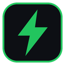

تحميلات متزامنة
قائمة تحميلات منظمة تشغّل عدة ملفات في نفس الوقت مع شريط تقدم وسرعة لكل ملف.
TurboDownload مدير تحميل قوي يقسّم الملفات ويحمّلها بالتوازي، ويلتقط تحميلات متصفحك تلقائياً، وينظّم ملفاتك في مجلداتها، ويتحقق من سلامتها — كل ذلك بواجهة داكنة أنيقة.
أدوات عملية صُممت لتوفر وقتك وتحمي ملفاتك، دون إبطاء جهازك.
قائمة تحميلات منظمة تشغّل عدة ملفات في نفس الوقت مع شريط تقدم وسرعة لكل ملف.
حدّد أقصى سرعة للتحميل حتى يبقى الإنترنت متاحاً لباقي أعمالك.
ابدأ التحميل في وقت تختاره، وأطفئ الجهاز تلقائياً عند انتهاء كل شيء.
ارجع لأي تحميل سابق وافتح الملف أو مجلده بنقرة واحدة.
تُرتَّب الملفات في مجلدات حسب نوعها: فيديو، موسيقى، مستندات، برامج وغيرها.
قارن بصمة الملف بعد التحميل للتأكد أنه سليم ولم يُعدَّل أو يتلف.
إذا انتهت صلاحية رابط التحميل، جدّده وأكمل من حيث توقفت.
انسخ أي رابط وسيلتقطه التطبيق مباشرة ويعرض لك خيار التحميل.
مرّر تحميلاتك عبر خادم وسيط عند الحاجة بإعدادات بسيطة.
اكتشف روابط الفيديو في الصفحات وحمّلها مباشرة من المتصفح.
يعمل بهدوء في الخلفية ويبقى في متناولك من أيقونة الـ Tray.
تلتقط تحميلات Edge و Chrome تلقائياً وتمررها للتطبيق، وإن كان مغلقاً يحمّل المتصفح كالمعتاد.
واجهة داكنة مريحة للعين، وألوان خضراء واضحة تدل على الحالة.
| الملف | الحالة | السرعة | التقدم |
|---|---|---|---|
| setup-installer.exe | يعمل | 8.4 MB/s | |
| holiday-video.mp4 | يعمل | 3.2 MB/s | |
| design-assets.rar | مجدول | — | |
| report-final.pdf | مكتمل ✓ | — |
تثبّت الإضافة مرة واحدة، وبعدها يلتقط TurboDownload كل تحميل يبدأ في Edge أو Chrome. إذا كان التطبيق مغلقاً يعود التحميل للمتصفح فلا يضيع منك شيء.
تحميل الإضافة (22 KB)اضغط زر التحميل واحفظ ملف الـ ZIP على جهازك.
فك الضغط ثم شغّل TurboDownload.exe — لا يحتاج تثبيتاً.
من صفحة الإضافات في Edge أو Chrome فعّل وضع المطور ثم «تحميل إضافة غير مضغوطة».
نعم، قد يحذّر ويندوز من أي برنامج جديد غير موقّع رقمياً. اضغط «مزيد من المعلومات» ثم «تشغيل على أي حال». ويمكنك مقارنة بصمة SHA-256 أسفل الصفحة مع ملفك للتأكد أنه الملف الأصلي.
يعمل على ويندوز. وإضافة المتصفح تدعم Microsoft Edge و Google Chrome.
تعيد الإضافة التحميل إلى المتصفح تلقائياً، فلا يضيع أي تحميل.
احسب بصمة SHA-256 لملف الـ ZIP (في PowerShell: Get-FileHash .\TurboDownload_App.zip) وقارنها بالبصمة المعروضة أسفل الصفحة.

حمّل TurboDownload وابدأ في ثوانٍ.
تحميل للويندوز15.3 MB · الإصدار 1.0ffcd55ad3c9aae10c73a35d498745b4a3006b05d59a8394f7747ecc3453b9e88